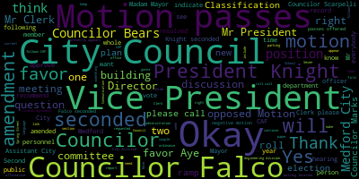

[Caraviello]: Good evening, everyone. 27th regular meeting of the Medford City Council. Mr. Clerk, please call the roll.
[Hurtubise]: Councilor Bears?
[Bears]: Present.
[Hurtubise]: Councilor Falco? Present. Vice President Nights? Present. Councilor Marks? Present. Councilor Morell? Present. Councilor Scarpelli? Present. President Caraviello? Present.
[Caraviello]: All rise and salute the flag. Motion by Vice President Knight to suspend the rules to take paper 21-541 out of order. All those in favor? Seconded by Councilor Falco. All those in favor? Motion passes. Dear Mr. Presidents and Councilors, I respectfully request and recommend that the City Council approve the following amendments to the revised ordinance titled Compensation plans in Lee Borden's Chapter 66 personnel. This amendment is requested due to a recently negotiated agreement with the Teamsters Local 25 covering employees from three departments. It is estimated that the contract will cost approximately $288,920.92 in retroactive funds. This contract for which negotiations began in 2019 is the first covering the affected employees. A request for transfer of the funds to the affected apartments will be submitted to the city council under a separate cover. Sincerely yours, Brianna Lungo, current mayor. be it ordained that the City Council of the City of Medford in Chapter 66, Entitled Personnel Article Two, Entitled Classification Compensation Plans, Section 66, Act 4-0, is hereby amended by inserting the following new section. I'll try it here. be it further ordained that the positions outlined herein be removed from the current classification as they appear in the current classification compensation plan. Okay. Any discussion on this?
[Knight]: The representative from the administration might want to explain what's going on with this, Mr. President.
[Caraviello]: There is no one from the, I don't see anybody from the administration here, Mr. Vice Presidents. How much are they asking us to spend tonight? There is, I do not see anyone from the administration on here unless there's another name here.
[Knight]: Mr. President, maybe we can have a representative from this newly organized employee group come up and explain to us what this is all about. I know that this is something that's been long awaited. We've been waiting for a long time for this contract to come before us. So maybe someone can be here to fill us in.
[Caraviello]: Good evening, name and address of the record, please.
[South]: Stephen South 106 Damon Road, Medford, Massachusetts.
[Caraviello]: Okay, Mr. South, if you want to give us a little brief synopsis of what this is about. Yes.
[South]: Thank you, Mr. Chairman, the new collective bargaining agreement in front of you and your fellow Councilors is a first time collective bargaining agreement covers 12 members of this bargaining unit consisting of the recreation department, the DPW superintendents as well as the code enforcement officers. It was over a year and a half in the making through negotiations, long and tedious negotiations. And we believe that the final agreement that has been agreed to by the administration and Teamsters Local 25 is very fair and will compensate and provide benefits to these 12 employees that are fair. for the very, very important work that they perform for the city. So we respectfully request that the council, um, prove this new collective bargaining agreement. And, um, and then we'll see you in three years. Thank you, sir.
[Scarpelli]: Council Scarpelli. Thank you. And thank you, Mr. South for bringing this forward. I think that with the teams is representing, uh, these employees, I think it looks like it's an upgrade that's overdue. And I appreciate your effort and your hard work with this. But the question I can, if we can make an amendment to just send this to the city administration. I got word back that non-union employees, there were a handful of non-union employees that were bypassed their regular step rate during the COVID. So my question is, are we going to make that whole with their upgrade that they deserved? I don't want them to, we approve a step, a new agreement, but they're still missing a big piece of their, what was owed to them. I know that we acquired funds from the federal government and hoping we could, ask that from the administration, Mr. Clark. Thank you.
[Hurtubise]: But yes, we can please.
[Caraviello]: Thank you.
[Marks]: Mr. President, we can also find out what positions in particular did not receive this step race for the past fiscal year.
[South]: Are we talking about for this unit or for? No. Oh, okay. Thank you. He got nervous. You're ready to fight.
[Marks]: Yeah.
[Unidentified]: Yeah.
[Marks]: Okay. Whatever. Yeah. If he doesn't mind. I do have a question about the language.
[Knight]: Mr. President says, be it further ordained, the positions outlined herein will be removed from their current classifications as they appear in the current classification and compensation plan. So it looks like we're passing it, and then it looks like we're eliminating it. Be it ordained that the following classification plan is adopted, we're adopting it. And then it says, be it resolved that the positions outlined herein be removed.
[Bears]: Mr. President. Councilor Best. I'm reading it as add these new classifications and then remove the positions from the old classifications. It looks like there's 18A, 15A, So I'm reading it as it's creating new classifications for these specific positions and then removing those positions from the former classifications.
[SPEAKER_02]: They should put new in there or something.
[Bears]: I would assume so. I think it's a PW21A is a new classification. Correct. And these positions are now in PW21A. but if there are positions that are in PW21 that aren't included here, they're staying the way they are. Basically, it's moving these positions out of existing caps into new caps. Yes.
[Falco]: Correct.
[Bears]: Correct.
[Falco]: But there's no one on the line from the administration to answer these questions.
[Caraviello]: Not at the moment. Any further questions? Further questions? Chair awaits a motion.
[SPEAKER_02]: Motion for approval, Mr. President.
[Caraviello]: The motion by council. On the motion by Councilor Marks, seconded by Councilor Scapelli, and we'll vote on the B paper first. On the motion on the B paper, offered by Councilor Scapelli, seconded by Councilor Falco. Mr. Clerk, please call the roll on this.
[Hurtubise]: Councilor Bears? Yes. Councilor Falco? Yes. Vice President Knight? Yes. Councilor Marks? Yes. Councilor Morell?
[SPEAKER_07]: Yes.
[Hurtubise]: Councilor Scarpelli?
[SPEAKER_07]: Yes.
[Hurtubise]: President Caraviello? Yes, I have the affirmative.
[Caraviello]: None, the negative motion passes.
[Knight]: Mr. President, where we have waited 19 months, 20 months for this contract to come to fruition, something that started during the previous administration and was negotiated almost to the end of the current administration, I would offer the motion that the additional readings be waived and the employees before us this evening be afforded their cost of living increase ASAP. This would be a retroactive increase to January 1st, 2021. So that's about seven months of benefits that these employees would be able to receive should we waive these additional readings. Second.
[Caraviello]: Okay, so you wanna make that as an amendment?
[Knight]: That'll be a motion, Mr. President, to waive the additional readings on the passage of the ordinance.
[Caraviello]: So on the motion by Vice President Knight, seconded by Councilor Marks. So the motion to waive the three readings. So the motion is to approve the ordinance and waive the three readings, that's one. No, just to waive the three readings. Just waive the three readings. All those in favor? All those in favor? Aye. Aye. Motion passes. On the original paper. Mr. Clerk, please call the roll on that one.
[Hurtubise]: Vice President Knight moved for approval. Who's the second on that?
[Caraviello]: No, Council Member Moxmoor for approval, I think. Yes. Councilor Marks. Yes. Councilor Morell. Yes.
[Hurtubise]: Councilor Scarpelli? Yes. President Caraviello?
[Caraviello]: Yes, seven in favor, none in negative, motion passes. 21452, dear Mr. President, city councilors, I respectfully request and recommend that the city council approves the following transfers for the purpose- Mr. President, I didn't know if the members wanted to hang around for the rest of the meeting.
[SPEAKER_18]: It's only two or three hours.
[Marks]: If you want to wait. Okay, then you're coming, okay.
[Unidentified]: Okay, thank you.
[Marks]: If you want to wait, we haven't approved the money yet.
[Caraviello]: Dear Mr. Presidents and City Councilors, I respectfully request and recommend that the City Council approves the following transfers for the purposes of funding the negotiated contract settlement between the City of Medford and Teamsters Local 25. Department, Executive, Personnel, $288,151. Two, Department of Public Works, Personnel, $7,529.99. Building personnel, $184,269.46. Electrical personnel, $28,306.76. Recreation personnel, $68,082.30. Total, 288, 188.51. Move approval, Mr. President. On the motion by Vice President Nights, seconded by? Second. Seconded by Councilor Bears. Mr. Clerk, please call the roll.
[Hurtubise]: Councilor Bears? Yes. Councilor Falco? Yes. Vice President Knight? Yes. Councilor Marks? Yes. Councilor Morell?
[Caraviello]: Yes.
[Hurtubise]: Councilor Scapelli? President Caraviello?
[Caraviello]: Yes. Seven affirmative, none of the negative motion passes. Motion to revert back to regular business. Offered by Vice President Knight, seconded by Councilor Falco. All those in favor? Aye. All those opposed? Motion passes. Hearings. 2-1 1-9-0. The Medford City Council should conduct a public hearing on Tuesday, July 13th, 2021 at seven o'clock p.m. via Zoom remote video conferencing relative to the petition by Mayor Brianna Lengelkern to amend Chapter 94, Zoning of the Revised Ordinances, City of Medford, Section 94-35A, to change the structure of the Methods Zoning Board of Appeals from three members and one associate to five members and two associate members. The full context of the amendment may be viewed in the office of the clerk room 103, or the city's website at www.medford.org, departments, community developments, by clicking on current CV board filings. A Zoom link will be posted in July 9, 2021. Mr. President.
[Knight]: Vice President Knight. I do believe as part of this paper, we did request some information from the administration concerning some documentation and documents that this council asked an amendment, establishing term limits.
[Caraviello]: Yes, we got to continue this meeting until the next city council meeting. Sounds good to me. Okay. So you're gonna move to continue with that. Move to continue. on the motion by Councilor Bears to continue this to the next city council meeting.
[Falco]: Are we continuing to get that information that Councilor Knight referenced?
[Caraviello]: Yes, that'll be part of the paper. And we're still awaiting a decision from the- OCD board? OCD board. Okay, perfect.
[Falco]: I just wanna make sure we're all on the same page. Thank you.
[Caraviello]: All right. All those in favor?
[Hurtubise]: Councilor Bears moved to continue, seconded.
[Caraviello]: Councilor Falco seconded. All those in favor? Aye. Opposed, motion passes. Okay. 21-422, petition for a grant allocation, 257 Spring Street, Citizens Banks, American with Disability Act upgrades. Okay, you are hereby notified by the Medford City Council a public hearing that will be given both via Zoom and in person at Howard F. Alden Memorial Chambers on the second floor of Medford City Hall, 85 George B. Hassell Drive, Medford Mass at 7 p.m. on Tuesday, July 13th. The link will be posted no later than Friday, June 9th, on a petition of L.R. Construction on behalf of Citizens Bank for permission to construct ADA upgrades at 257 Spring Street, Citizens Bank, Proposed plans have been filed in the Office of the City Clerk. We are therefore appraised that after a due notice and a hearing provided by law that they be granted permission to complete the project in accordance with the plans available for inspection of the Office of the City Clerk, Medford City Hall, from 103-85 George P. Hassell Drive, FMS. The entire scope of this project includes ADA upgrades in three locations, front ATM vestibule and lobby, rear parking lot, front entrance along Spring Street, The work at the front entrance includes modifying city sidewalks. The scope of the work at the front entrance is as follows. Demo existing sidewalks, three sections along the building, total of 108 square feet. Install new ADA compliant landing and ramp. Install a new ADA compliant handrail around the landing ramp. approved by the chief engineer with the following conditions. Recommendation is that the engineering division be provided a suggested process to assist the city council in our October 2020 memo, as indicated by the process approved by the city council. The petitioner would be required to draft a proposed licensing agreement in coordination with the legal department and engineering division. The engineering division recommends that the city council determine if this process is adequate and reasonable pursuant to section 74-63 of Sydney Ordinance 2. The engineering division recommends that existing encroachments be allowed to remain so situate for as long as they remain in good condition. If they fall into disrepair or poor condition, the city will revoke the license. The existing encroachments will include a metal fire escape, building cornices, and signs attached to the building three. The easement plans indicates an easement area that extends beyond the existing projections into the public way. The engineering division takes no exception to this approach. However, the license agreement should indicate that no new encroachments or expansion of the existing encroachments is allowed beyond the limits of the existing encroachments as shown on the easement plan. the license agreement should indicate that the licensee will maintain encroaching items in good condition. Five, the license agreement should indicate that the city will revoke the license upon removal of the encroaching items. Seven, the city council to decide If the license agreement should include a renewal period or expiration. Seven, city council should recommend a reasonable fee be charged by the city for use of the public property for the benefit of the petitioner. Eight, the licensed area must include a level landing at the base of the ramp. Nine, the license agreement should acknowledge that the potential presence of underground utilities beneath the proposed ramp should not restrict access to these utilities. 10, The notification for the public hearing regarding this approval should include utility companies that have infrastructure in this block of Spring Street. 11, sidewalk work associated ramp adjacent to the cracked sidewalk panels. Adjacent cracked panels should be replaced. 12, the ramp is a projection of the building and associated with the building exit entrance. The ramp must be built per applicable building code inspected by the building department for code of compliance. 13, the building indicates a national grid manhole near the proposed ramp. The licensee agreement should not restrict access to this manhole. 14, the plan indicates a tree pit on Spring Street that conflicts with the clearances needed for the ramp. The new location appears reasonable and should be confirmed with the tree ward. 15, the license agreement should indicate the minimum clearance between the minimum ramp and the front of the car to be 72 inches. Call 781-393-2425 for further accommodations. Mr. Cleo. Okay, do we have anybody here from... Tim, are you on the call here? No? Mr. Tim? Hang on. Tim is on.
[McGivern]: Yes, Mr. President, I'm here.
[Caraviello]: I've read all these recommendations. Do you have any further comments on this?
[McGivern]: No, besides just so everybody understands what they're asking to do is to build a portion of their building the ADA ramp in the public way. So it is a building projection in the public way. So that is what you would be, you know, approving tonight. And then the other thing to note is that there are existing encroachments that include the elements in described the fire escape, some signage and actually the building itself. So the easement plan submitted sort of takes care of all those elements. So hopefully that clears things up.
[Caraviello]: Okay, Councilor Morocco. That's wrong.
[Morell]: Thank you, Mr. President. So Tim, if I understand it's the access ramp is extending out onto the existing sidewalk is what's happening.
[McGivern]: Correct.
[Morell]: So if you're, you know, parallel to the building, you know, you're walking down the sidewalk, so there will be, I guess, ramps on all three sides, I'm assuming so people who are just continuing down the sidewalk are able to, whether they're in a, you know, stroller mobility device are able to just go up and down that new ramp.
[McGivern]: Um, no. So the sidewalk is wide enough to accommodate the private ramp associated with the building and public sidewalk, which would be next to it, basically. So that part wouldn't change. So, um, that's a question.
[Morell]: It wouldn't necessarily break the path of anyone coming down the sidewalk, and they would have enough space for, you know, a stroller, a wheelchair, anything like that without having to, um, come in contact with this ramp.
[McGivern]: Correct.
[Morell]: Okay, thank you.
[Bears]: Councilor Biss. Thank you, Mr. President. Tim, just two questions for you on these conditions six and seven. Do you have any recommendation to the council as to what a reasonable fee would be or, you know, renewal period or expiration?
[McGivern]: Not specifically, but You know, I don't know if there are, I looked into it before doing this review, I don't think there are very many similar situations in the city. So I do not have a recommendation for you.
[Bears]: And in terms of the sidewalk that they are replacing in addition to the ramp, is that just gonna go up to the limit of the sidewalk next to their building on Yeomans and Spring Street, or is it going any farther than that?
[McGivern]: I believe a plan's in your packet, but the ramp itself, I don't know the exact length of it, but it's a rectangle. I'm not sure if the proponent is here, but I'd say 10 feet by five or six feet, a rectangle on Spring Street, right in front of Citizens Bank. It doesn't extend over to Yeoman's, and it doesn't extend over to the parking lot. It is isolated in that sidewalk on Spring Street.
[Bears]: So the sidewalk panels that are being replaced in addition to the installation of the ramp are just on Spring Street.
[McGivern]: Oh, I'm sorry, Councilor Beza, I didn't hear that last part.
[Bears]: It says in here that 108 square feet of sidewalk is being replaced as well. Is that just the sidewalk adjacent to the ramp on Spring Street?
[McGivern]: That would be, and the proponent may be able to correct me, but I believe that would be the sidewalk that is taken up by this ramp.
[Bears]: Okay, I'm gonna have to find it. This is a long one, but somewhere in here it says that sidewalk is being, additional sidewalk. Cracked panels are being replaced as well, adjacent to the ring, number 11. Yeah, number 11.
[McGivern]: Right, so that basically is if they're going to be doing this work and there is a cracked panel next to where they're doing the work, then they should be replacing that as well. That is in there. It's pretty typical for me and my office to do that because if you're working next to a panel that needs to be replaced, then you should just replace it.
[Bears]: Yeah, okay, gotcha.
[Falco]: Mr. President.
[Knight]: if I may, from the chair, Councilor Falco. Tim, has this plan been reviewed to ensure that it's compliant with the ADA?
[McGivern]: The plans, yes. So not the built condition, obviously, but the, yeah, the plans, I reviewed them with the general principles of ADA clearances and slopes and things like that. Once it is built, and I would imagine too, before it's built, that the building department would have a review process for the ADA compliance as well.
[Knight]: and probably our ADA compliance officer. So the ADA compliance officer hasn't had an opportunity to review any of this yet.
[McGivern]: I don't think so. It's been through my office and I think that's it.
[Knight]: Thank you. Chair recognizes Councilor Falco.
[Falco]: Thank you, Mr. President. Tim, quick question regarding Councilor Abuerez had mentioned previously the recommendations of number six and number seven. So do you know if this has been done in any other cities and towns in the past?
[McGivern]: Yes, it has. And basically the process and the plan that comes with this is pretty typical. So it's similar to non-building easements that this body has approved before, except the big difference here is that we're talking about a portion of a building as opposed to just a park or a landscaped area or something like that. But yeah, I mean, I'm familiar with the City of Boston's process. They license public way areas for private use, and they have a typical process for that.
[Falco]: Are you familiar with the structure of what they've done in the past, like the City of Boston?
[McGivern]: No, I'm not.
[Falco]: I'm looking at this because reasonable is kind of arbitrary as far as what's reasonable. And if we're looking to come up with a fee, you know, it'd be good to have some sort of guidance as to which way to head on that, I guess.
[Bears]: A million, two million?
[Falco]: Exactly, exactly. I mean, is it a yearly fee? Is it a one-time flat fee? That type of thing. I think it's something that needs to be looked at.
[Knight]: I certainly think it's a step in the right direction. And I think that this is something the council's called for in the past, is for the monetization of the use of public spaces in the storage and, you know, scaffolding of equipment and stuff like that. So I think it's a step in the right direction. I'd like to see we're making an effort to do it. You know what I said.
[Falco]: I agree. I think it's a great idea. I'm just looking for in the past, if we've done something like this, and because I don't remember doing something like this since I've been on the council, maybe I could, I don't think it comes up that often, but I'm just wondering, and I'm not sure if some of the senior councilors might have recommendations as to which way to head on this. If we've done this before in the past, what have we charged?
[Knight]: You ready, Mike? It's all you, baby. Councilor Marksley. The chair recognizes Councilor Marksley.
[Bears]: I do have a quick question. Would this be an annual fee or a one-time fee? Or is that in our purview as well, Tim?
[McGivern]: Oh, so I wasn't sure if you asked me. I believe that's in your purview. So I would think it would be similar to like renting, renting land or leasing space. So
[Scarpelli]: Okay, Mr. President.
[Knight]: What's the going rate? What's the going rate of public space?
[Scarpelli]: So could we leave this with the, if we move to approve, but also the caveat that maybe the city assessor could give us a cost estimate of what the amount of land that they're going to use and what the rate is square foot for rental. I mean, I'm just throwing ideas out there, Maybe we can ask them for some guidance.
[Knight]: I mean, I think it might make sense for us for approval, even to sit down with the assessor to, you know, define the parameters of what we're getting into. And I don't think it, you know, it's commercial property. We have a commercial tax rate. We have 108 feet of land. So I think that's not going to be a formula that's going to be too difficult for us to put together. But I think it's something that we should know.
[Scarpelli]: Then I make the motion that we, I know if we have further questions, but we table this until the next meeting with the the notes sent out to the city assessor to give us a recommendation.
[Knight]: On the motion of Councilor Scarpelli to refer the matter to a committee of the whole with the city assessor, seconded by Councilor Falco, Councilor Marks.
[Marks]: Thank you, Mr. President. I was just wondering if the petition is on the call. The commissioner is on the call. And my question is, Mr. President, are there currently renovations other than ADA that are happening to Citizens Bank and that work triggered off additional ADA? Upgrades.
[Knight]: The chair recognizes Christopher Schultz on behalf of the petitioner.
[Unidentified]: Can you read it?
[Knight]: And name and address for the record please Mr. Schultz.
[Chris Schultz]: Chris Schultz with LR Construction.
[Knight]: Did you happen to hear Councilor Marks's question?
[Chris Schultz]: Could you repeat it please? I'm sorry.
[Marks]: The question is, is Citizen Bank in the process of renovating the building and these renovations triggered off ADA upgrades? How did this come about?
[Chris Schultz]: They are not part of a larger renovation. This is part of a larger group of citizens branches that are being ADA upgraded. There was some other work inside the vestibule we did that we've already completed that did not affect any of the city sidewalks, and this was the second half of the project that does go upside down to the sidewalks. Bruce Bisbono, the architect, I believe, has also been unmuted. He can speak to some of these questions as well.
[Marks]: Also, Mr. President, if I could. Was there any consideration of doing this work internally and not needing to take over city property?
[Chris Schultz]: The ADA requirements did not with the layout of the building, we did not have the space to do this internally. Feel free.
[Knight]: Mr. Bisbon, would you like to add anything? I don't think we can hear you. You're unmuted, but we have no volume for you.
[Chris Schultz]: The simple answer to that was no, there was no way to do it inside the footprint of the building. That's why we've talked to Tim and gone through this process, because we needed to use the city sidewalks.
[Marks]: In my last point, Mr. President is under bullet point two under recommendations. It says that the engineering division recommends the existing encroachments be allowed to remain as long as they're in good condition or if they fall into disrepair or poor conditions. And then it says the city will revoke the license. So I'm not sure what advantage that is. Just say, and I'm not saying this is gonna happen, these particular ramps fall into disrepair, they become an eyesore, they become unsafe. We revoke the license and guess what? They're on our city sidewalk and we have an eyesore there. What advantage is that to the city of revoking a license? I'd like to see something with a little more teeth, Mr. President, that they will not fall into disrepair. or that they maintain a certificate of condition on a yearly basis. So they hire their own contractor to come out every year and make sure they're in proper condition and so forth. So I'd rather see that than we put a condition that will revoke a license and then be stuck with a ramp that is an eyesore that's dangerous and becomes a city responsibility. So that would be my recommendations for bullet point number two.
[Knight]: So noted. Chair recognizes Amir Salam from Citizens Bank. As soon as I can find how to unmute him. There we are.
[Amr Salam]: There you go.
[Knight]: How are you? Name and address for the record. Good. How are you? Very good.
[Amr Salam]: My name is Amir Salam. I'm a senior project manager for Citizen Bank. I'm located on Pennsylvania. Welcome. A couple of items just I want to clarify here, like for maintaining the good condition, of any item within our property. It's our responsibility for the safety of the public and customers and our colleague in the branch. So anything we usually do regular maintenance internally to avoid any damage element of the building. I think this is in regard to item number two, to make sure that the enroachment element that's already existing in good condition The reason of doing the ADA work is we found out that this, our building is not ADA compliant. It's very challenging for senior or somebody in a wheelchair to access the branch. That's why we're doing the upgrade. And Chris, as Chris mentioned, it's very challenging. Actually, it's infeasible to have internal upgrade, to have the ramp internal in the building. So we need the approach from the exterior. That being said is we have, as Tim mentioned, is that we have plenty of sidewalk and the ramp is not enroaching, like, you know, that far into the sidewalk. Which is, in this case, my kind of concern or comment about item number six and seven, license-wise, our lease for this building is triple net. Any maintenance required for the sidewalk or exterior element we are required to fix it. So I believe there is no need for the license or period of expiration. Because if under any condition like a city did inspection and found any unsafe condition in the sidewalk or in a building and notify the bank, the citizen bank, we will move on and fix it automatically. And I'm just kind of like item number seven We're doing this for the easement for the public. I mean, I wasn't sure we haven't dealt with this conditions at the town or the city require us to pay fee for adding a ramp to make it facilitated for the public and make it easier compliance.
[Marks]: So Mr. President, if I could- and I appreciate that response. So is there anywhere in this document or in the proposed license agreement that talks about the liability of this particular structure? Who's liable if someone gets hurt on this structure?
[Amr Salam]: Citizen Bank, because we have a triple net lease with the owner of the building that we are liable for maintaining the building.
[Knight]: I think that's a question for legal counsel to answer, not the engineer.
[Marks]: Well, I know, so maybe that question should be directed, but this is, I appreciate what the gentleman's saying, but this now is going to be located on a city sidewalk. and we've been hearing about the building, the building, the building, we're talking about something on a public sidewalk. So that would be another question, Mr. President, I have regarding liability. Who would be responsible, Mr. President, regarding the liability if someone were to get hurt on that particular structure?
[Knight]: I'd like to offer that in the form of a question to the solicitor or to the engineer for follow-up.
[Marks]: We can offer it to the city solicitor, that's fine.
[Knight]: or anybody from the public that has anything they'd like to add? Oh, I'm sorry. The chair recognizes Councilor Morell.
[Morell]: Thank you, Mr. President. I'm just, I do believe this, I'm thinking, I believe the citizens on High Street has this similar setup where there is a ramp that goes out onto the public sidewalk. Just if that offers any precedent for these questions we're asking.
[SPEAKER_18]: They do.
[Knight]: Chair, what's the motion? So be a table or a committee of the whole with the assessor or?
[Caraviello]: With those two questions that Councilor Marks in about the liability and the cost of.
[Knight]: Does the body feel that warrants a committee of the whole or does the body feel that warrants something we could do on regular meeting? Regular meeting? Right. Motion to table until the questions are answered by the administration.
[Marks]: Second. And also Mr. President on the bullet point too, if we can get maybe the city engineer to rework that I just don't feel comfortable with the city revoking a license with a structure that's left on our public sidewalk. Understood.
[Knight]: On the motion by Councilor Scott Peli, seconded by Councilor Caraviello, as amended by Councilors Caraviello, sorry, Councilor Scott Peli and Marx. All those in favor? Aye. All those opposed? The ayes have it, the matter is tabled. Council paper, I'm sorry, motions, orders, and resolutions. Council paper 21441 offered by President Caraviello. In light of the recent tragedy in Florida, be it so resolved, the building commissioner report back to the council the protocol for expecting buildings over four stories in the city of Medford.
[Caraviello]: Thank you, Mr. President. I think we've all seen what happened down in Florida over the past few weeks. And I hope that that never happens in our city. But is there a protocol that we have in our city for inspecting buildings every 10 years, every so many years, over so many stories? Something that a couple of residents reached out and asked me that I didn't have an answer. If you can have the commissioner report back on what the protocol is to what our city does for maintaining the buildings over so many stories, especially where a couple of them are senior citizen buildings and a couple of right close to the water. So just get back a report on what our protocol is to inspect these bases on some kind of basis.
[Knight]: A motion by Councilor Caraviello, seconded by Councilor Marks. All those in favor? Aye. Opposed? The ayes have it. Council Paper 21442 offered by Councilor Bears. Be it so resolved, the Medford City Council congratulate Medford High School teacher Andrew Milney on his retirement after 22 years of service to our community. Councilor Bears.
[Bears]: Thank you, Mr. President. Andy Milne was personally, and no offense to any of my other wonderful teachers at Medford High School, was my favorite teacher at Medford High School. I took AP US History with him in 11th grade. And I would say that's one of the reasons that I'm sitting right here right now. So I could go on and on about how much a wonderful class it was, that he was a great advisor and person to talk to when you had questions or were thinking about college or your future. But I think his record speaks for itself 22 years at Medford High School, hundreds and hundreds of students that he personally, not only taught but sought to advising and helping. And I think he speaks. in his role to the great faculty and educators that we have here in Medford. So he deserves our congratulations on his retirement and wishing him the best going forward. Thank you. That's a strong member of the union. The chair recognizes Councilor Scarpelli.
[Scarpelli]: Thank you, Mr. President. Thank you, Council B.S. for bringing this up, this resolution. I know that Andy Milton not only was a great teacher and someone that we're going to miss because he's left such an impact on our school community, but also in the sports world. I know that Coach Milne was head coach at Arlington High School soccer and an avid athlete in his own right. And I think that a lot of what he did in his personal life, he really he really was a driving force for a lot of his students. And they talked to some of the students that they really took his drive in all aspects of life. So I think that's a sign of a great teacher and a sign of a great mentor. So I guess we can blame him for council's BSV. So he's right. but uh he's a great someone say thank someone say thank great teacher and uh wish him wish him well in his retirement and um thank you i'm sure you guys had some great battles on the soccer field coach on the motion by councillor bears seconded by councillor scarpelli all those in favor all right opposed the ayes have it the motion passes
[Knight]: Council Paper 21443 offered by Councilor Falco. Be it resolved the Medford City Council congratulate Aleesha Nunley Benjamin on her recent appointment as finance director for the town of Littleton and thank her for her many years of service to the city of Medford. Councilor Falco.
[Falco]: Thank you, Mr. President. I just wanted to thank Aleesha Nunley-Benjamin for her many years of service to our city as the budget director and CFO. She made a number of great contributions here to our city and with the budget process. She was always available to answer questions. It was a pleasure to work with her and I just wanted to wish her well in her new role in all of her future endeavors. So I just want to say congratulations, good luck and best wishes to Aleesha Nunley-Bedger.
[Knight]: Thank you. Chair recognizes Councilor Morell.
[Morell]: jump the line. Thank you, Mr. President. Yeah, I think Councilor Falco for bringing this forward, um, throughout the budget season and any financial paper that's come before us. Alicia is has spent countless hours with us and it's just a wealth of knowledge and helping us understand what's coming before us the impact and There was rarely a question she couldn't answer, particularly in this time when where there's, you know, there's ARPA, there's COVID relief, there's so many things to understand in a short amount of time. And she really did an excellent job. And not because we just spent 30 hours in budget meetings, but I'm dreading next year's budget without her. So she'll be sorely missed and I congratulate her on her new appointment.
[Scarpelli]: Chair recognizes Councilor Scafelli. Thank you. Councilor Falco, thank you for bringing this forward. Um, for years working in the municipality and also, you know, having, um, worked with Alicia, you realize how amazing she, she is and, uh, how lucky that community is to have her now. Um, I too want to thank her for all of her hard work. One thing about Alicia, we realized, uh, whenever you were confused about something, she brought it down to layman's terms. You understood it. Um, and she always had the answer, even if you didn't like the answer, she would tell you the answer straightforward. with no reservation, with no political bantering. It was straightforward, highly professional and something I'm gonna miss. So I wish her luck in her endeavors and thank you again for council Falco brings forward.
[Knight]: Vice president Knight. Mr. President, if I may, I too would like to take an opportunity to thank Alicia for her service to the city of Medford over the course of the last what must be now Four years, four and a half years. I'm fortunate enough to say that I've developed a strong friendship with her and I think she's someone that's been a great asset to this community and she's going to be sorely missed. With that being said, although our loss is another town's gain, I think we have to wish her the best of luck in her new endeavor and thank her for all her service here in this community. She's certainly been an asset and she will be sadly missed. So with that being said, I thank the council for putting this resolution on. Thank you, Mr. Vice President.
[Marks]: Councilor Marks. Thank you, Mr. President. I wanna thank Councilor Falco for bringing this up. You know, it's sad when someone leaves that you've worked with for so many years and not being able to thank them before they leave, Mr. President. And I too wanna thank Alicia. You know, there were many times we didn't agree on issues. There were many times that we were at odds as a council and, you know, as a finance department But you can always rest assured that Alicia spoke from her heart and she spoke from a position of knowledge and authority. And that was much appreciated, Mr. President. Even things that potentially would benefit this council. Alicia was the first to tell us that during budget time that we were offering suggestions that probably would have been approved if we offered them in a different fashion. And we found out that in this budget session that we had more abilities as a council to make changes to the budget than we were ever explained in all the years I've been on the council. And I think it was largely due in part to Alicia realizing her responsibility as the budget finance director in the community, but also realizing that in order to have city government operate that I think all parties have to be on the same page. and I think she keenly understood that, Mr. President. So I will sorely miss her experience and knowledge, her breadth of knowledge when it comes to finances. And I hope the city can find someone pretty quickly to fill her shoes, Mr. President. Thank you.
[Bears]: Thank you. Councilor Bears. Thank you, Mr. President. I echo the statements of my colleagues and certainly we have big shoes to fill. I've been through two budgets now. One of them I voted against, one of them I voted for, and I don't think Alicia held it against me that I voted against the first one, but incredibly informed and informative person. And I don't think, you know, I don't think people understand the personal sacrifice that she made over many years, especially these past two years to keep the city moving. And it's a huge loss in that respect. So, I hope that a position can be filled soon, but I think it'll be difficult to find someone with such aptitude as Aleesha Nunley-Benjamin. So I wish her the best and congratulate her on her new position.
[Caraviello]: Thank you, Councilor Bears. And personally, I wanna thank Alicia for the years that I've worked with her. Certainly a woman of vast knowledge and she will be missing our community. And like you said, our loss is someone else's gain. So Alicia, I wish you well in your new position. So on the motion. by Councilor Falco, seconded by? Seconded by Vice President Knight. All those in favor? Aye. All opposed? Motion passes. 21444 offered by Councilor Falco being resolved that the City Administration provide the Medford City Council with an update as to how the Finance and Auditing Departments will operate since there was a vacancy in the CFO position. Councilor Falco.
[Falco]: Thank you, Mr. President. And this resolution is related to the last resolution. As we all know, Alicia Dudley Benjamin recently left this position. And my question basically is to the administration, what is the plan moving forward for this role? Alicia held the role of financial director, CFO, auditor, and I know she also helped out with a number of treasury functions as well. And I believe, you know, it's these are vital, vital, you know, roles to the daily operations of our city. And, you know, I think it's our fiduciary responsibility to be asking the questions as to what is the plan moving forward for the administration? Is this going, are they going to hire for this role? We're full time personally looking, is it going to be on a temporary basis, but we need to have this information. I think it's our responsibility to ask these questions. And I know that the assistant that was recently hired just this year is still in training or was in training, just trying to come up to speed when Alicia left. And I know he's doing a good job, but we need to know what's the plan moving forward. And so the question is basically to the administration, what's the plan? Like I said, these are vital roles. This position needs to be addressed ASAP. It's $190 million budget, $191 million budget, and we need answers to these questions. So I ask for my colleague's support and move approval.
[Caraviello]: Thank you. Any further questions? No, on the motion by Councilor Falco, seconded by? Seconded by Councilor Scott Filion. All those in favor? Aye. All those opposed? Motion passes. 2-1-4-4-5. Offered by Councilor Falco. Be it resolved that the Medford City Council congratulate Medford residents Amy Orcutt on her acceptance to West Point and being named GBL Soccer Athlete of the Year. Councilor Falco.
[Falco]: Thank you, Mr. President. I'd like to congratulate Amy Orcutt and her family on this remarkable, very impressive achievement being accepted into the West Point Military Academy and also being named the, let's see, GBL Scholar-Athlete of the Year. Amy received recommendations from Congresswoman Clark, Senator Markey, Senator Warren. And, um, you know, this is a great achievement. It should be recognized, and I wanted to recognize it. Um, it's just a remarkable achievement, and I wanted to wish her well. Congratulate her on all our future endeavors and wish you well at West Point and congratulate her family as well.
[Scarpelli]: Thank you, Mr. President. Councilor Scarpelli. Thank you for Councilor Councilor Falco will bring this forward. I was fortunate enough to watch Amy play as one of my daughter's teammates. And as a freshman on the varsity, having a leader like Amy Orca to follow and to emulate is a huge, huge benefit. Something that I cherish that my daughter had that opportunity. people what has been written last year. Amy was probably one of the best players on the team and went up for a layup, came down and tore ACL. And if you know Amy Orcutt, I think she wanted to go back in the game. And but she sat on the bench, smiled on her face and just kept pushing her teammates. So I know that West Point is such a such an honor. And I think she's going to make method proud as she already has. So I want to congratulate her and wish her the best of luck. She's a she's a great role model for all of our young female athletes, especially, but all the athletes in Medford High School to follow. Thank you.
[Falco]: Mr. President, if I may, I wasn't quite finished, but I just wanted to amend, invite her down to a future meeting. I don't believe she's home right now. I believe she's off in a training, but I want you guys, if you could invite her down for a council accommodation. That'd be great. Thank you.
[Caraviello]: Any further discussion? Oh, on the motion by, offered by Councilor Falco, seconded by Vice President Knight. All those in favor? Aye. All those opposed? Motion passes. 21446 offered by Councilor Falco. Be it resolved that the DPW perform routine maintenance at the city-owned Bridgewell-Hegner Center on Maple Park Avenue. Councilor Falco.
[Falco]: Thank you, Mr. President. Recently, I was walking down Maple Park Avenue, just taking a walk, and I walked by the property, the former Hegner Center. It's in really bad shape. I mean, it is overgrown with all kinds of trees, weeds. I mean, it looks pretty neglected. It's not fair to the residents that live in Maple Park condominiums that they have to look at that every single day. So I just wanted to ask that the administration please send by the DPW to clean up the property, it is the city-owned property. It should be on a regular maintenance schedule. By looking at it, it does not appear to be on a regular maintenance schedule. The residents that live in that neighborhood should not have to put up with that. And I'd also like to find out what the maintenance schedule is for this property. So if I could please get that from the DPW and if we could just have the DPW provide some maintenance on that property, greatly appreciate it. And I would ask for my council colleagues support and I move for approval.
[Caraviello]: Thank you. Any further discussion? Second. On the motion by Councilor Falco, seconded by Councilor Scapelli. All those in favor? Aye. All opposed? Motion passes. 21447 offered by Councilor Falco. Be it resolved that Park Method report back to the City of Medford City Council the reason for the system glitch over the past weekend where customers were charged numerous times in error and what steps have been made to resolve the issue. Councilor Falco.
[Falco]: Thank you, Mr. President. I received a number of calls over the past week regarding people that actually Park the cars. I think it was actually Haines Square area where they were charged numerous times. And I mean, they basically swiped their credit cards and they were charged like 30, 40 times the same transaction over and over again. And it was to more than one person. So I'd like to get a report back to Park Medford as to what the issue was. And just to confirm that these issues were all resolved by Park Medford or Republic Parking. This here is, it's a big concern, especially since the parking operation is going to be transitioning from Park Medford or from Republic Parking internally to the City of Medford. So I just wanna make sure that these types of issues are, have been addressed and resolved before the city takes on this new program. Move approval, thank you.
[Caraviello]: Okay, any further discussion? Second. The motion by Councilor Bailão, seconded by Vice President Knight. All those in favor? All those opposed? Motion passes. 21448 offered by Councilor Falco. Be it resolved that the administration provide a staffing update with regard to the Office of Planning, Development and Sustainability and the administration's plan to fill any vacant positions. Councilor Falco.
[Falco]: Thank you, Mr. President. This is just to get an update from the Planning Development and Sustainability Department. I know during the budget hearings that the director for the department, Alicia Hunt, I know they're really busy. They have a lot going on, but I believe they lost Annie Streetman, the planner recently. So I just wanted to get an update as to the progress that's been made with regard to replacing her and when they feel that the position will be filled or the vacancy will be filled.
[Caraviello]: Thank you, any further discussion? On the motion by Councilor Falco, seconded by? Seconded by Councilor Scarpelli, all those in favor? Aye. All those opposed, motion passes. Communications, City Officers and Employees, 21449. To President Richard Caraviello and member of the Medford City Council, registered voters. The St. Francis Parish Center will no longer be available to the city as a polling location because the building has been sold. I therefore have worked to identify a new polling location for Ward 2, Precinct 1. I am recommending that you approve Roberts Elementary School as a new polling location for Ward 2, Precinct 1. I've had a preliminary conversation with John McLaughlin of the Medford Public Schools, and he sees no obstacles to using the Roberts School for this purpose. As you're aware, all municipal elections use the same ballots. Placing 2-1 and 2-2 in the same location ensures that both polling locations would use the same ballots for state and federal elections as well. Furthermore, there is a precedent in using schools as multiple polling locations. The city already uses the former Columbus School, now renamed for both 5-1 and 5-2. I need to notify the voters of a precinct change at least 20 days in advance of the election. I plan to make this notification via mailing required and by at least two reverse 911 calls for each election. I will also place signs at the St. Parish Center as required, notifying voters that the site is no longer a polling location. In addition, we will make all the additional required notifications and we will place the new information on the city's website in advance of the two upcoming elections. Once you have formally designated the new polling place, I will begin this notification process. Our number one concern is to plan and execute full, fair, and transparent elections. I am confident that this new polling location will allow us to achieve this goal for the voters of 2-1. Thank you for your attention on this issue. Please feel free to contact me if you have any concerns. Mr. Clerk, would you like to address this?
[Hurtubise]: Councilors fairly straightforward. I tried to keep all the information in the in the memo is as brief but as detailed as possible. Because the parish center has been sold. We are going to lose that as a polling location. So I, we need to move to one into another location. The location that makes the most sense is, uh, is the Roberts school because 22 is already located there. Um, as you're aware, all city ballots are the same, uh, for the for municipal elections. There are three different ballots for, uh, state and federal elections, but the 21 and 22 ballots are the same. I'm talking about this because it makes sure that voters are still getting the same ballots, uh, that they're used to getting at these at these locations. It also it also helps with the poll helps the poll workers because, um, the poll workers, if there's ever any kind of late cancellation, they can be sort of interchangeable and they can they can walk from one room to another to assist voters. So it would make a lot of sense having the same ballots in that location as well, which is why we proposed 2-2. And we already know that because the Roberts School is used as a polling place, that it's already meets all the compliance needs. So that is why I suggested that polling place. Thank you, Mr. Clerk.
[Bears]: Just, and if you haven't figured out yet I understand it would both polling places be in the gymnasium, they would ideally they would be in different rooms.
[Hurtubise]: Yeah. Ideally, they'd be in different rooms. Now that the precedent at the at the at the former at the former Columbus school on when schools in session. the voting often takes place in the same room, but when school is closed, it's in different rooms. And I would prefer that, I would prefer to have the polling locations in different rooms, because that gets rid of some confusion for voters and for poll workers. So I would prefer that they'd be in different rooms. It's not necessary, but that's the preferred route.
[Falco]: Mr. President. Thank you, Mr. President. So, Mr. Clark, so when someone comes into the office, into the school to vote,
[Hurtubise]: Is there going to be someone directing them as to where the two, two, one, two, one, there's going to be signs up so that people can, people know they're going to go to the right room because it's, and we're going to have to do that because. because there's going to be two polling locations in there. I mean, voters who currently use the former Columbus school are somewhat used to the process now, but, but this is going to be a new process for the, uh, for the two one voters. So there's going to be some additional signage and we'll have some, and we'll also have somebody directing people to make sure they're going to the right place, but there'll also be, you know, the check-in tables are set up so that you know, only two, one voters can check in at the two, one polling place and only two, two voters can check into the two, two polling place. So the check-in tables will be that way as well.
[Falco]: I understand that part. And I just want to make sure that it's as seamless as possible.
[Hurtubise]: I completely agree with you. I imagine that there might be a couple of hiccups, but nothing, but I don't anticipate there'll be any, any kind of major, any kind of major issue. And the goal is always to make it as seamless as possible.
[Falco]: Some people might not know the difference between 2-1 and 2-3. I just want to make sure that it's as seamless as possible. If I'm correct, I was told that that building is being leased. Is it being sold?
[Hurtubise]: We were told that it was being sold. But regardless, St. Francis told us it was no longer going to be available as a polling place. Thank you very much. As soon as we were confirmed with that, we had to move forward with a new polling place. Rather than wait to see if we could stay in there, whether it's leased or sold, it was going to be easier and faster and ultimately better for the city if we moved out of there, because we didn't want to wait until the last possible second on this one.
[Bears]: That's the best. I'm sure you're already there, but just a recommendation that any two one signage say former St. Francis location, that'll help.
[Morell]: Thank you, Mr. President. To that same point, I don't know what the plans are as far as updating the website to reflect the new name of the Columbus School to the Mississauga. I know stuff has been changed in, I don't know the status of the physical signage, but I know there have been updates made in mapping tools. So if people are looking up, they may have issues ending up the right place. So I know it remains Columbus on the website for the polling location. So I just don't know what the plan is for that.
[Hurtubise]: I'm sorry, I'm sorry to cut you off, but I can, I can answer that what we're going to have to do when we, and I'm, I'm deliberately waiting on these updates until, until, uh, you've addressed this memo tonight, so we can take care of as much of this at once as we can. But in terms of the former Columbus school, uh, we are required to use the former name and the new name, uh, you know, in the polling location. And that's what we're going to, that's what we're going to, it's not considered a polling location change, but it is, but because it's been renamed, we have to use both names, at least for this election.
[Morell]: Absolutely, yeah, and that makes sense. I just wanted to make sure in terms of wayfinding. Okay, thank you.
[Caraviello]: Okay, any further discussion? On the motion by Vice President Knight, seconded by? Second. Seconded by Councilor Bears. Mr. Clerk, do we need a roll call on this? Or is this a voice vote?
[Hurtubise]: That is your discretion.
[Caraviello]: Let's call the roll on this to make sure everybody's in agreement.
[Hurtubise]: Sounds good to me. Councilor Bears.
[SPEAKER_07]: Yes.
[Hurtubise]: Councilor Falco. Vice President Knight? Councilor Marks?
[SPEAKER_07]: Yes.
[Hurtubise]: Councilor Morell?
[SPEAKER_07]: Yes.
[Hurtubise]: Councilor Scarpelli? Yes. President Caraviello?
[Caraviello]: Yes, I'm in affirmative, none in the negative. Motion passes.
[Scarpelli]: Mr. President, motion to take.
[Caraviello]: On the motion by Councilor Scarpelli, seconded by Vice President Knight, all in favor? Aye. Aye. Motion passes. 21453 offered by Vice President Knight and Councilor Scarpelli. Being so resolved that the Medford City Council extended steep and sincere condolences to the family of Ray Buckland on his recent passing. Vice President Knight.
[Knight]: Mr. President, thank you very much. Recently, Mr. Buckland passed away very suddenly. And for those of us who don't know who Ray Buckland is, he's probably one of the greatest athletes to come out of high school and one of the greatest people to ever come out of the city of Medford. Ray had a very exceptional basketball career at Medford High School. He went on to play basketball at the Division 3 University of Massachusetts at Boston, where he went on to become a three-time Division 3 All-American. It's an unheard of accolade. After his graduation as the president, he went on to play professional basketball all over in Europe, but he always remained true to his roots here in Medford. And he could always be seen coming back to Medford to visit friends and family alike. He was someone that had the blue and white in his veins, who carried himself with pride and was a great friend to many. I recall stories of Mr. Buckland often coming down to Bradshaw Street to visit Mr. Bates, and the stories that they tell about Ray could go on and on and on. But he was a great gentleman, a great person, a great friend, Mr. President. He was a loving husband, a loving father. His son had a very successful baseball career up at St. Mary's in Lynn and Salem State. And when you talk to Ray, that was one of the proudest things that he had to talk about was his son and the success that his son had in athletics. Ray had a great career in public service as the president. a worker at the Lynn Housing Authority for a number of years, and he just recently retired and celebrated his retirement after 30 plus years of service to the community. So after his unexpected death, his family has certainly gone through a lot of trial and tribulation, and it's my hope that this council will join me and Councilor Scarpelli in sending our condolences and support during this trying time. So I thank you all for allowing me the opportunity to present this resolution on behalf of the Buckland family.
[Caraviello]: Thank you. Councilor Scarpelli.
[Scarpelli]: Thank you, Mr. President. Thank you, Councilor Knight. Those are great words. Again, I said it too often lately, but another legend lost. I was fortunate to live three houses down from the mythical Ray Buckland. When you were a little kid and you came outside and there was this, I believe when I was a kid, he was 10 feet tall and he'd wear his Chuck Taylor's and he'd have a basketball in his hand. And you actually thought that he, he could never be stopped. And when you approached him, he wasn't this big monster. He was just this greatest person that could be, that could reach, um, reach any kid and it showed when he came back, when he came back from Europe and started coaching basketball for Medford High School. We had a neighbor, I still remember, we had a neighbor that was a great young man, I won't say his name, and he was very tall. And back then to have, I think, size 16 shoes and to be six foot seven and be in middle school was unheard of. And he was a little odd. And at the time, you know, growing up and I'll never forget that we would see him and I'd say, hey, where'd you get those awesome sneakers? And he'd say, Ray brought them over to me. And that's the type of guy he was. I mean, he'd see something and he'd do his little piece, little part, little part. And, you know, I've spent a lot of time in Lynn and Frazier Field with our successful baseball programs, whether it be through Babe Ruth or whether it be through the high school. And I still remember when John started playing, I still remember some, that mythical figure walking down the parking lot and screaming out method Mustangs. And, uh, there was Ray and leaning against the fence with the rest of the Mustangs and rooting on his method Mustangs team. And, um, you know, I was fortunate to see him just to just a month ago and sit with them and watch a few winnings of the ball game with them. But, uh, he was just a, like Adam said, uh, a great dad, great husband, a great friend loved his mom and dad. And again, it's another legend lost and send our condolences to his family. He will be missed. So thank you.
[Caraviello]: Thank you, Councilor Scarpelli. And I want to send my condolences to the Buckner family. And like they said, he's a young man who was larger than life when he was a young kid. He was a legend to our community. And as Councilor Scarpelli said, another legend who whose blood was blue and white, has passed on. So again, my condolences to the Buckland family on his loss. So if we could all rise and stand.
[Knight]: If you look at Ray's obituary, there's a line in what you just said made me think of it, but I believe at the end of Ray's obituary, it said, heroes never die, but legends live forever. And those are certainly words that represent Mr. Buckland.
[SPEAKER_02]: All rise and stand, please.
[Caraviello]: All those in favor? All those opposed? Motion passes. 21454, offered by Vice President Knight, being so resolved that the Medford City Council congratulate. Jason sissy Aaron 20 years of success as an owner proprietor of chromatic tattoo and body piercing, located at 365 Main Street in Medford, Vice President night, Mr. President, thank you very much.
[Knight]: I can't believe that it was 20 years ago that Jason sissy or opened up chromatic tattoo. It seems like it was just yesterday that. Prior councils were discussing the merits of the House of Payne tattoo application and the Painted Bird tattoo application and Chromatic Tattoos tattoo application. And here we are 20 years later, Mr. President, and he's been operating very successfully in the area, in the region, without a glitch, no problems, no issues, no concerns. Mr. President, a very successful business, very highly rated on Yelp. He's got quite a cult following, but more importantly, Jason's a great guy. contributing member to our society, contributing member to our community. He's very concerned about the cleanliness in front of his shop and the cleanliness along that stretch at Sammy Petrella Corner by Bella Ravioli, an Oasis restaurant. And he's someone who's not afraid to put his money where his mouth is. And anytime you drive by the shop, you can see Jason out there picking up cigarette butts and making sure the trash is emptied and making sure that the garden beds are weeded. But he's also running a very successful business, putting in hours and making sure that the residents of this community are provided a service. So with that being said, Mr. President, I ask my council colleagues in supporting me and approving this resolution, move for approval.
[Caraviello]: And for the discussion. And I say I had the opportunity to see Jason's dad this morning and I congratulate him for his son. And I remember coming up here to speak long before I was a Councilor in favor of this. 20 years ago, tattooing was abnormal. Now it is the norm. So I think, I just want to congratulate him for his 20 years and being a pioneer in the business. So congratulations for his success. So on the motion by Vice President Knight, seconded by? Seconded by Councilor Scarpelli. All those in favor? All those opposed? Motion passes. 2-1-4455 offer Vice President Knight. Being so resolved that the Medford City Council hold a moment of silence in recognition of July 20 2021 being the third annual Brian rabbit day. Vice President night.
[Knight]: Mr. President, thank you very much. There aren't too many people in the history of this community that have their own day annually. And Brian rabbit is one of those people. Brian was a longtime employee of our public works department. He worked in the water department And some people said he might have been the hottest working man in show business. There wasn't a time that you didn't see Brian where he didn't have his work boots on, dirt in his hands, and he was ready to climb in or climb out of a hole. And Brian was also someone that would have gave you the shirt off his back, the last dollar in his pocket if you needed it. And that's why when Brian got sick, so many people came out to support him and to thank him for the type of person that he is and for all the contributions that he's made to our community. And in an effort to recognize Brian, Mayor Burke at the time established Brian Rabbit Day, July 20th, 2019 was the first Brian Rabbit Day. And it's been celebrated annually since then, Mr. President. And I don't want this to be something that gets forgotten with the change of administration. So with that being said, I'm bringing this matter forward and I'm asking my council colleagues to support it. We can have a moment of silence and recognition of Brian Rabbit, someone who's been loved in this community, who dedicated his whole entire life to working in this community. And hopefully moving forward, Mr. President, we can have more celebrations like this in memory of Brian and his life.
[Caraviello]: Thank you. On the motion by Vice President Knight, seconded by Councilor Falco. All those in favor? Opposed? Motion passes. Please rise for a moment of silence. 2-1-4-5-6, offered by Councilor Bears. Being so resolved in the Medford City Council that we send our deepest and sincere condolences to the family and friends of Joseph Placetti on his recent passing. Councilor Bears.
[Bears]: Thank you, Mr. President. One of the lucky blessings of youth is that I am not often here putting condolence resolutions on the agenda. And I think, you know, when I am in that position, it's very often a very sad situation. And all I can say is that Joseph Joey Blasetti as a 26 year old Medford resident passed away unexpectedly. And suddenly he's a musician, comedian, a friend to very many people made a huge impact on many thousands of people here in Medford and across our area and across the country. I'm close friends with his sister Brittany and friends with his sister Lauren. And there's a lot of people, his parents, friends, many people in the city mourning and grieving his loss. So I just wanted to take a moment to recognize it and hold a moment of silence and let everyone know as well. there will be services at St. Joe's, Saturday, July 24th at 11 a.m. So thank you very much.
[Caraviello]: And it's always a shame when a young man of his age passed away in our community. So on the motion by Councilor Bez, seconded by Vice President Knight, all in favor. All those opposed, motion passes. Please rise for a moment of silence. Motion to revert back to regular business. Councilor Falco.
[Falco]: Thank you, Mr. President. I just have a quick question while we're under suspension. I noticed we received a number of meeting notifications about, I believe, ongoing marijuana companies that are coming in. And I know there was, I believe it was one meeting last week as well. And when I look at these, it looks like some of these have Zoom links and others maybe don't. Do we, is there any type of requirement? I know we're starting to head more with our meetings and all the public meetings do have Zoom links or a Zoom component to them. Yeah, so everybody can see in the interest of transparency what's going on and if they have questions, they can weigh in and give their opinions as well. And I just noticed when I look at these here, there's two of these that are before us, I shouldn't say before us, they're just notifications, but we've been notified two of these have Zoom links, one of them clearly does not. So I was wondering if there's any type of requirement, or if you know of any type of requirement as to whether or not there is a Zoom component?
[Caraviello]: If I can recall, I thought that, Each company was supposed to have their own public.
[Knight]: I believe that the Cannabis Advisory Commission was supposed to define those parameters. Okay.
[Caraviello]: Okay. I would think that everybody should have a link. So everybody knows it is open and transparent. So maybe it's something that we should pass on to the committee.
[Falco]: If we could pass it on to the committee. I just noticed like there's a meeting here. I believe it is.
[Caraviello]: actually this month this one was is tomorrow I think yeah there's no link to it so I just thought that that was just click if you could pass this on to the committee to make sure that everybody has a zoom link. Even the ones at City Hall.
[Bears]: Mr. President. If we could add to that message that the city administration posts these on the city events calendar on the city website as well.
[Falco]: Thank you. Cause I know there was one meeting last week and I don't think that had a zoom like, and I noticed that some residents have been getting notified.
[Caraviello]: Cause I have received a couple of calls from some residents questioning, you know, didn't even know about it.
[Falco]: So exactly, just people, residents should have the opportunity to attend these either in person or if they can't via Zoom and it should be an option. I know all of our meetings have a Zoom component and just in the interest of transparency, people know what's going on, they can weigh in.
[Knight]: I do believe that public hearings dictated by state law. And the guidelines and requirements dictated by state law are pretty clear. They're outlined in, you know, I think 44A section 5 about public hearings. But I think that that's the parameters that they're going by.
[Caraviello]: And if I could, I happen to be out today on something. I don't think, some people don't understand. This was not an issue put forward by the Medford City Council. This is something that was voted in by the residents of Medford. And as city councilors, it was our job to put it forward. So this wasn't something that we put in, because like I say, I did run into a person today and very upset that this was happening and why the city council did this. Just so everybody knows that this was voted in.
[Falco]: So. My point is just making sure that everyone has access to these meetings. That's the big thing.
[Caraviello]: Yes.
[Falco]: Thank you.
[Caraviello]: Okay. So on the motion to revert back to regular business. All in favor. Motion passes. Communications from the mayor. Personnel ordinances. Mr. President, city councilors. I respectfully request and recommend that the city council approves the following amendments to revise ordinance entitled personnel article two classification and communication plan section 6633 entitled offices employees non-union by making the following amendments. Amendment A, new positions. I know Mayor Lungo-Koehn is on the call. Mary, would you like to join in? Good evening, Madam Mayor. Okay, so class CAF 17 presently appears as CAF 17 vacant. The language of CAF 17 shall be amended to read as follows. CAF 17, Director of Parking Facilities Manager. Questions on the first one.
[Knight]: Mr. President, I just think it's important to point out that the salary for these two positions would be $100,928.70 annual per position. Say that again. $103,928.70 per position annually. On CAF 17. Is that correct? That is correct. Okay, any further questions on this one before we move on? Okay, amendment B, new and amended positions.
[Caraviello]: Classification CAF 7 presently appears as follows. CAF 7 parking clerk, business manager. The language of CAF 7 shall be amended to delete the following positions of parking clerk and to read as follows. CAF 7, business manager, parking enforcement officer, recreation facilities coordinator. Questions on amendment B.
[Knight]: Mr. President, I just think it's important to point out that this position of parking enforcement officer in recreations facilities coordinator would bring a salary of $64,666 and 68 cents number one. Number two, I'd like to ask why the position of parking clerk is being proposed to be eliminated. Number three, recreational facilities coordinator is nothing more than pork. Nothing more than pork, Mr. President. $65,000 to pay somebody to do a job that somebody was already doing as part of their salary. There's no need for the position. That should be a program coordinator's position. That should be a program coordinator's position. That should be someone that's delivering programming for the youth of this community, programming to the recreation department, not scheduling fields for $65,000 a year when we had somebody that was already doing that. All right, so I don't understand the reasoning or the motive behind creating this position, other than the fact that it seems like it's a nice new job to create for somebody. But at the end of the day, someone was doing it, Mr. President, for $65,000 a year. We had somebody doing it for $0 a year as part of their salary. So I don't understand why we're bringing this position forward. Quite frankly, I don't think we need it. and I'm not gonna be able to support it this evening, the creation of the recreational facilities coordinator position. Also, Mr. President, looking at this, I don't see a need to eliminate. the title of parking clerk. We can keep it in the CAF as well. We can have a parking clerk and we can have a parking enforcement officer. I don't see a need to eliminate the parking clerk title because we're gonna need a parking clerk if we're gonna have in-house parking programming. So with that being said, my recommendation would be to strike the position of recreational facilities coordinator from the document and to keep parking clerk in the document.
[Caraviello]: Thank you.
[Knight]: And I'll put that in the form of a motion.
[Caraviello]: Mayor Locario, would you like to speak on that? Mr. Clerk, can you unmute the man?
[Lungo-Koehn]: Thank you, President Caraviello and members of the city council. I'm here to support the paper, all except the title change part for the payroll director.
[Caraviello]: I'm sorry. Amendment B. Did you want to speak on anything on Amendment B?
[Lungo-Koehn]: I'm here for the entire paper. I think it's important to fulfill the promise I made to get as many positions as I could. CAF changed accordingly so we can move forward. and that's why I am here tonight. I think with regards to that one issue with the facilities coordinator recreation, this will be a fourth position in the recreation department, one that will alleviate some of the job duties of you know, one person having a full-time job, coordinating the field of dreams, and who also is trying to handle Hormel and the rink. There is nothing whatsoever against that person. That's a whole lot of duties that have been thrown on one person over the last several years, especially during tough economic times. What we're trying to do here is create programming year round for La Conte Rink. which we feel is definitely, people are excited about, people want to see happen. So that is important for us. We wanna create more recreational programming in all the free hours that are available at the rink, as well as somebody to handle Hormel. So this would be a program coordinator type position anyway, labeled recreation facilities coordinator.
[Knight]: So the program coordinator position, we're just gonna call it a facilities coordinator position. So I guess they're not going to be doing the duties that they're assigned. Oh, they are. I'm confused. But, um, in terms of the, um, year round programming at La Conte rink, um, it's been brought to my attention. There's been a lot of discussion about privatizing La Conte rink and, um, a longterm lease agreement with the Boston Imperials to allow them to use this as their home rink. Is there any truth to that?
[Lungo-Koehn]: No conversations about no, no conversations at all about the privatization of La Conte about having the Imperials, I'm not aware of the Imperials. I did have conversations probably right before COVID with Tufts University, maybe doing some work and taking some hours weekly, but I myself am not aware of anything with regards to the Imperials.
[Knight]: So I'm talking about privatization of rank operations, whether it be the Boston Imperials or anybody else, has there been a discussion about privatizing the rank operations?
[Lungo-Koehn]: Other than maybe two to five minute conversation between the rec director and myself because of one person reaching out, no.
[Caraviello]: Okay. Okay. Any further discussion on amendment B? Councilor did you want to make an amendment?
[Knight]: I would like to offer that in the form of a motion, Mr. President. So your motion was to strike the position recreation facilities coordinator. The mayor just said, it's really going to be a program coordinator's position anyway. We already have a title for that.
[Lungo-Koehn]: I didn't know. No, this is a recreation facilities coordinator. I would say that that is the majority of the job because there is a ton of programming already for Hamel that needs to be organized as well as La Conte Rink. But we're hoping to open the rink year round and create some recreational programming, whether that would be through Kevin and Danny and Kate on the side, but it would still be the recreation facilities coordinator that would obviously be a bit of a part of that. So I think this is extremely important. This has been in consult with the rec department. This is exactly what they're hoping. The position was labeled, and it's a fourth person in that department that could help move Bakanchi Rink, you know, do more improvements and also open it year round, which we're extremely excited about. And so isn't the community. So I would just ask for your support on this paper, you know, it was explained like this in the budget and we are here to just get your support and changing the calf.
[Knight]: Mr. President, it's not a maintenance position. I don't know what improvements they're gonna be doing down the rink. I don't think they're gonna be painting and fixing benches and sweeping and cleaning. But like I said, we had the athletic director that was, since we've taken over all the fields in the rink, he was doing it as part of his salary. This is $65,000 of expenditures that I don't think we need to make. So that's why I offer the amendment.
[Caraviello]: So Councilor Knight has amended amendment B to remove the, recreation facilities coordinator. And to keep the parking clerk position. And to keep the parking clerk.
[Lungo-Koehn]: Before the roll is called, if I can just add one thing. I don't know if I'm incorrect, but I think you might be talking about step five on the salary that you're mentioning, Councilor Knight. So step one would be about, if I'm correct, 53, seven? Cap seven.
[Caraviello]: parking enforcement officer.
[Scarpelli]: The position for recreation is 53 to 64. Correct.
[Lungo-Koehn]: Yes, that's I just wanted to make sure everybody is clear on that.
[Caraviello]: Okay, so Council night is amended it to.
[Scarpelli]: remove the the facility recreation facilities coordinator, and keep the parking enforcement officer, Mr. Mr. President, if I can, I completely understand what counsel nights going with this but I think that looking at the. the description and talking to the director, I think that this person's role, not only opening the rink full time, full year, but also providing much needed programming with the middle school sites on site and having a dedicated person there to assist with that. You know, sometimes you try to look at the benefits and something that you feel that, I don't know what Councilor Knight's feeling and the reason why, but I think that this is a beneficial position, something that I'll be supporting tonight.
[Knight]: One information, I'm not saying don't put a fourth person in recreation, I'm just saying make it a program coordinator. We don't need to hire a $65,000 scheduler when we had someone doing it for free. I want the department to grow. I want them to have more personnel. I just want the personnel to be utilized in a position where we're delivering a service to the public.
[Caraviello]: Thank you.
[Knight]: Good evening.
[Caraviello]: Name and address of the record, please.
[Lungo-Koehn]: It's Kevin Bailey.
[Kevin Bailey]: I'm the recreation director for the city of Medford on 34th Street. I just wanted to talk a little bit about the position as well. As you know, our department has been growing tremendously over the past couple of years. At that last budget meeting, as we said, on our programming, we have gone from just the past few years of running between two to 300 people per session in our programs, and we're now this summer, close to 800 people. So our department itself has really grown tremendously. With this new change, we are gonna be running Hormel and Oconee Rink and we know that the person who was in charge previously had an enormous amount of work on his plate. I give them really good credit on the amount of work that he had to do. And we're hoping by having this fourth full-time person using the software that we have with MyRocket being able to do online scheduling, but having some consistency between other city facilities for recreational needs would fall into the MyRocket and into Method Recreation website. I do feel by having this person in here, will help out with the scheduling, but also the staffing as well, to have that person on the Hormel campus to be able to check on the Hormel staff, the people who are staffing at Laconie Rink. And as mentioned, we can grow those programs as well, just like when we took over the recreation center.
[Knight]: So are they gonna have supervisory responsibility?
[Kevin Bailey]: They will have some supervisory on the part-time staff, yes. And I believe the job description does have that on it, that they'll be helping with the Zamboni drivers. as the previous manager done.
[Caraviello]: Any further questions from Mr. Bailey?
[Knight]: The recreation coordinator is going to be responsible for the scheduling. of the facilities and also the staffing of the part-time employees and the oversight of the part-time employees?
[Kevin Bailey]: We still have the director, myself, and the assistant director who will also be still overseeing the staff as usual, but helping out with the scheduling of the day-to-day functions.
[Knight]: And presently, do you oversee the staff at Hormel and La Conte?
[Kevin Bailey]: I'm sorry?
[Knight]: Presently, you oversee the staff at Hormel and La Conte?
[Kevin Bailey]: Not yet.
[Knight]: Thank you.
[Kevin Bailey]: You're welcome.
[Caraviello]: Any further discussion? Any questions for Mr. Bailey?
[Kevin Bailey]: Okay.
[Caraviello]: Thank you. All right, do we wanna vote on this separately or we wanna wait till the end? Okay, so motion has been made by Vice President Knight to eliminate the Recreation Facilities Coordinator and to keep the parking enforcement clerk, is that correct?
[Knight]: Separate them if you want, Mr. President, then I'm sure people don't care about the parking clerk job.
[Caraviello]: Okay, so on the motion by Vice President Knight, seconded by? seconded by Councilor Scarpelli. All those in favor.
[SPEAKER_18]: You want the motion to sever?
[Caraviello]: So the motion is to sever the Recreation Facilities Coordinator.
[Knight]: And keep the clerk.
[Scarpelli]: So there's a motion to keep the clerk and a motion to eliminate the facilities coordinator.
[Caraviello]: Yes. Okay, so on the first vote to keep the clerk, is that correct? All those in favor? Aye. Motion passes. On the motion to eliminate the recreation facilities coordinator, roll call vote has been requested by Vice President Knight.
[SPEAKER_02]: We need to do a call vote on both cases appointments.
[Caraviello]: I would think, yeah. Do the recording, so please call the call.
[Hurtubise]: Is there a second on Councilor Ntuk's motion?
[Caraviello]: Councilor Scapino. Mr. President. Councilor Monk.
[Marks]: and ask too, was there money allocated in the budget for a parking clerk? Was there a line item that at least had $1 in it?
[Caraviello]: Madam Mayor?
[Marks]: Yes, there is.
[Caraviello]: Okay. Yes, there is, Council Members.
[Hurtubise]: I'm ready whenever you are. Okay, call the roll. Councilor Bears. No. Councilor Falco. No. Vice President Knight. Yes. Councilor Marks. Yes. Councilor Morell.
[Morell]: No.
[Hurtubise]: Councilor Scarpelli.
[Morell]: No.
[Hurtubise]: President Caraviello.
[Caraviello]: No. Two in the affirmative, five in the negative, motion fails. Okay, amendment C, new positions. Classification CAF 19 presently appears as follows. CAF 19, city clerk. Treasurer-Collector, Director of Budget, CPO, Director of Public Health and Elder Services, and Chief Assessor. The language of CAF 19 shall be amended to delete the position Director, Budget, CPO, and to appear as the following, as follows. CAF 19, City Clerk, Treasurer-Collector, Director of Public Health and Elder Services, Chief Assessor, Chief People Officer. On the motion to refer amendment C to a committee of the whole by Vice President Knight, seconded by? Second. Seconded by Councilor Marks. All those in favor? Aye. Motion passes. Roll call, please. Councilor Beavers has requested a roll call vote.
[Lungo-Koehn]: If I may, before we call the roll. Yes, Madam Mayor. I just want to speak in favor of this change. Chief people officer is the name that is commonly used for HR director and in a number of other cities and towns, and it's a standard language, and it was this specific title was you know, request of the city council that we split HR and diversity into two separate departments, which we took under advisement. We talked through it and we ended up doing it. We have two separate budgets. We are hopefully after tonight going to be able to hire the diversity director and have a chief people officer approved so that we can really start to move these two departments forward, as this has been an issue since January when I initially tried to get this CAF changed. So I respectfully request that we don't stall any longer and we move forward. In the future, too, with CAFs, I'm open to suggestions on specific names because I just wanna be able to do the work and get things off the ground and get things moving forward versus just another meeting on it since it's been going on since January. This was something that the council requested. This is the name we chose for this singular department. And I just ask that you move forward. And I know, I think Mr. Osborne is present in the audience. And if he has anything more to add, I would just respectfully ask that you consider moving this forward.
[Knight]: Thank you. I'm sorry. I'm sorry. I just, I just had a question. So we have the chief people officer. So the people that he'd be the chief of would be the staff, right? The staff in the building.
[Lungo-Koehn]: Chief people officer is human resource director. It's, it's another name for a human resource director.
[Knight]: He's the chief people officer. The people that he's the officer of is the staff, right? So he's the chief of staff. We already have one of those, don't we?
[Lungo-Koehn]: We have somebody that's titled the chief of staff, but human resource director is handles most of the human resources.
[Knight]: So why don't we just call the human resource director.
[Lungo-Koehn]: It's the same thing. It's another name for human resource director. It's the up and coming way to actually Tyler Lovell, who's our assistant, who is our new hire and assistant CFO, is the one who said this, told us that this is the best way. I won't put words in his mouth, but this is, it's another name for human resource director. And this is the one we just happened to go with. If the council was very clear on that, it would be the human resource director. We're not opposed to that either. It's just, this is what we chose. This is something that's been ongoing since January, and we hope you approve it. It's another name for a human resource director.
[Caraviello]: Thank you. Councilor Morell.
[Morell]: Thank you, Mr. President. I just have a question about the director budget slash CPO. Is that that's going away because that was a title that reflects staffing needs that are no longer happening. Is that correct?
[Lungo-Koehn]: That is correct. Yeah, we're trying to clean up all the line items, remove duplicates. So we tried to do as much as we could for this meeting, and there'll be more before you over the next several meetings. So we'll probably be doing this all through the fall because as you dig in, this is definitely a historic problem that we've been uncovering more issues that it's gonna take quite a while to fix this completely.
[Morell]: Okay, thank you.
[Osborne]: Good evening name and address of the record please. Good evening, Council President, my name is Neil Osborne, and I am currently in the position of not having a title. Well, I don't have a title that has been agreed upon by every council member. I have been working for the city for more than four years. When there was an opportunity asked of me to do additional work, I readily agreed to do it. The mayor of the city has come before you with different title changes. At the time when she took over as the new mayor, there were three individuals that took on additional workloads and they were acting. I was one of them. Those other two individuals now have titles. And I think this simply reflects reality of the work that has been done by myself in my department to allow me to actually have a title that is respectful of the work and respectful of the type of community that we have. When I tell people about being a chief people officer for the city of Medford, they are proud of the work that has been done. and the hope that there will be more progressive work done in that position. So hopefully you won't delay that and allow me to have the respect of the title for the work that I've been doing for this community.
[Knight]: Thank you. Vice President, I certainly have no problem with the title. It's the rate of compensation that I question.
[Osborne]: Council President, this is only reflecting the two budgets you've passed for the past two years It simply makes it the reality of the budgets you have passed already twice, two years in a row.
[Marks]: Mr. President. Councilor. But the position titles have changed. Do you not agree with that?
[Osborne]: Well, the position titles have not been finalized.
[Marks]: They have changed, correct? So two months ago, we were talking about having a diversity slash human resource, and you spoke in favor of that. Now we're having a people person, chief people officer. And you're speaking in favor of that. The one consistent thing has been your salary has increased from day one. That's been the one consistent thing. So you may not have a title, but your salary has been consistent over that period of time. That was not approved by this council. That was not approved by this council. And according to the city solicitor, it needed to be approved. And that's not up for debate. That is the city solicitor's legal opinion, which is not a precedent for debate.
[Osborne]: But the work never changed. The amount of work I have done for the city absolutely has not changed.
[Marks]: I'm not questioning your work. I'm not questioning your worth. I'm not questioning your ethics. I'm not questioning any of that, just so you know, Ms. Osborne. But my question is regarding policy and procedure. And clearly the policy and procedure has not been followed by this administration. And that's what we're trying to get to the bottom of. So even though there may be a sense of frustration because the title is not there, there is a process that we have to follow.
[SPEAKER_18]: to have a process in place, it needed to flow, and that has not happened.
[Osborne]: So the Council President, is not this the process, that the amendments are being brought to the Council, and I think that's what is being asked of all of you, is to adopt what has happened in the past, to reflect the work, and to reflect that This particular job needs a title.
[Knight]: In the process, if I could. Vice President Knight, has the work that Mr. Durham has done been reflected in his compensation? Has he been made whole?
[Bears]: Mr. President, is that the issue? Yes.
[Knight]: Yes. So he's not owed from 2-120 to 7-920?
[Lungo-Koehn]: First of all, that's a personnel matter. It's not on the table right now. You don't want to violate open meeting law.
[Bears]: Mr. President, I believe we're at a roll call vote, and I think we should just take the vote.
[Caraviello]: Okay. Councilor Marks has the floor.
[Bears]: We're already in the middle of a vote.
[Caraviello]: The vote had not started. Councilor Marks has the floor. There was no voice. You requested a roll call vote, and the roll call vote had not started. So Councilor Marks still has the floor.
[Marks]: Mr. President, I just wanted to make the point, Mr. President, I as one member, I can't speak for my colleagues, was never opposed to creating a position title. What I was opposed to Mr. President is paying someone out of a calf, paying someone out of a calf that was never approved by this council. And that's always been the way it's been working in this community. And that's no fault of Mr. Osborne. I'm not even referring to Mr. Osborne because there are other positions as well. And those positions are eventually going to be before us as well, Mr. President. So this has nothing to do with Mr. Osborne. He happened to come up here tonight because he was probably asked by the mayor to come up. But this has nothing to do with the person in the position, Mr. President, but all to do with following policy and procedure, which is very important in the community. Because if that doesn't happen, things can go astray. And I don't want things to go astray, Mr. President.
[Scarpelli]: Councilor Scappelli. Thank you Mr. Oswald for being here. I understand what you're saying, but my confusion comes in as we debated the position, the diversity position, and debated the process of the CAF and how it went, is that you did do the work, and I appreciate the hard work that you've done, and you were compensated for that. But as we're moving forward to creating a new CAF, my hesitancy is that it was, the numbers were created for a position that held something in my eyes that if it was done correctly in the past and it presented to us, whereas the head of diversity, head of human resources to be paid at that level, I can see that's this. the reasoning for that. But as we're moving forward and changing the name of chief people officer, which is same as human resource officer, which now takes away the human diversity, you know, position. It really, to me, that's where the reason why I would want just more clarification, more understanding of the budget process and how that job will work with the committee of the whole meeting. That's why, I know that it's frustrating. I know you've done the work, but you also have to understand that this council is frustrated too in the process and how this was handled. So again, this is no reflection from me personally to you. I think I've said it a thousand times, you do an amazing job. I just think the process and understanding the funding mechanism and how this is, It was presented one way with the same number, and then it was changed with a bigger position that I thought was equally as important. And then, but the numbers stayed the same. So this is why I'm a little hesitant. That's for my vote tonight. So thank you.
[Knight]: Vice President Knight. And also, I think it's important to point out, Mr. President, when the administration first presented the idea or the theory to merge diversity and human resources in January of 2020, this council opposed it. We asked, we said, is this a conflict of interest? The city solicitor came back with an opinion that said it is, but it isn't, but it is, but it isn't. So then we said, we're opposed to that. And we sat down and we made our council priorities. And when we made our council priorities, we said we wanted a standalone diversity director. And then we got a budget and the budget didn't have that. The budget didn't have that. on June 30, the last day of the fiscal year, we were presented a budget and the budget bifurcated the position said, Hey, we gave you what you wanted vote for it now. This was something that was a year and a half in the making. It shouldn't have been done in the 11th hour.
[Bears]: Mr. President, I believe the city for a very long time had a director of personnel at which conducted many of the duties that we're talking about now for the chief people officer. I think the cap 19 is more than an acceptable rate of pay considering there was a comparable position that was in an even higher cap previously. I think we should just Point of information? I would think we should have this.
[Knight]: That comparable CAF 21 position was the Director of Budget and Personnel, that was Richard Lee. So he handled all the budget direction and all the personnel direction in this community. Now we have three people that do that to the tune of $307,000. We had one person that did it for 90.
[Bears]: I believe there were people who were in that position after the fact of Richard Lee who did not do all the budget work and that there was a budget CTO position at the same time.
[Lungo-Koehn]: That's correct.
[Caraviello]: Okay, so Councilor Bears has requested a roll call vote. To go to Committee of the Whole. Mr. Clerk, please call the roll. This is to refer to Committee of the Whole. Yes. Councilor Bears.
[Hurtubise]: No. Councilor Falco.
[Morell]: Yes.
[Hurtubise]: Vice President Knight. Yes. Councilor Marks. Yes. Councilor Morell.
[Morell]: No.
[Hurtubise]: Councilor Scarpelli. Yes. President Caraviello. Yes.
[Caraviello]: Five in affirmative, two in the negative. Motion passes. Amendment D, new position. Classification 11 presently appears as follows. CAP 11, assistant city solicitor, hearing officer, assistant city clerk. The language in CAP 11 shall be amended to delete the position of Assistant City Solicitor Hearing Officer and to appear as follows, CAP 11, Assistant City Clerk, Elections Coordinator.
[Knight]: Discussion on Amendment D. Mr. President. Vice President Knight. Again, I see no reason to eliminate the position Assistant City Solicitor slash Hearings Officer. I'd like to further amend that to add Assistant City Solicitor Hearing Officer, Assistant City Solicitor City Council.
[Caraviello]: Should I say that Assistant City Clerk, City Council?
[Knight]: Assistant City Solicitor, City Council.
[Caraviello]: Assistant City Solicitor, City Council.
[Knight]: I move for approval of that and the elections coordinated position. So there will be four positions in CAF 11? We created CAF 11 for Assistant City Solicitor for the City Council.
[Caraviello]: I'm confused.
[Knight]: So we're going to amend the title Assistant City Solicitor. We're going to create or create another one assistant city solicitor slash hearings office so we could have assistant city solicitor slash city council.
[Hurtubise]: So you don't want to delete the hearings officer. Okay, so we sever that please.
[Caraviello]: Okay, so, and you wanted this the assistant city. solicited to be for the city council? Yes. I mean, that's something that we talked about major legislative priority. I think that during the budget, I think the mayor said we would have negotiation to possibly retain services of KP law. And I would respect if we could also table this one to discuss that. We're not gonna fund it anyway. We wouldn't have to fund it if we had access to our own attorney through KP law.
[Knight]: But those negotiations haven't happened.
[Caraviello]: So it's only been a week since we approved the budget. I think all we're doing is creating a CAF on a title that we've asked for.
[Knight]: Mr. President. I don't have a problem. I don't have a problem laying that on the table for a future date. or even withdrawing the motion.
[Bears]: If I may.
[Knight]: Council Bess.
[Bears]: I mean, three weeks ago it was we shouldn't be putting things in the budget if there's no calf. I think we should follow the counter principle was we shouldn't be putting these in the calf. if there's no chance they're gonna be in the budget. That's just my position on it. I'm happy to discuss it more in committee of the whole, but- Point of information.
[Knight]: If we went that way, Mr. President, we never would have had a director of substance abuse and prevention. This council sat down and we created the position director of substance abuse and prevention, and then we pressured the administration to fund it, and then we go. Prior to that, we didn't.
[Bears]: If things get to that point, that's fine. I'm just saying, if we're trying to align the CAF with the budget and make sure that boxes are checked on both sides. We should at least, you know, let's not start on a position where we're in conflict.
[Caraviello]: The mayor did say we could have a discussion on potentially having our own- Mr. President, I will withdraw the matter and the motion on cleaning that position until sometime as you negotiate with the administration. Give us a little time to negotiate that.
[Knight]: Yeah, that's fine. So, any further-
[Marks]: Just if I could, just for clarification, the elections coordinator position, I think this was asked by Councilor Bears during the budgetary session, but once this CAF is approved, there is funding in the budget for full-time position. Will the person that currently is in that role be paid at that CAF until someone is hired? Madam Mayor? Can you just repeat that question, Councilor Marks, please? So the election coordinator position, once this CAF is approved, there's funding in the budget that CAF will exist with a person that's currently in a similar position within the registrar of voters office be paid until someone under that CAF, until someone is hired for the position.
[Lungo-Koehn]: No, we plan on posting for this as soon as possible. That was the plan.
[Marks]: Right. Right, but you have someone that's in the position now doing the function. And I hope, what's that?
[Lungo-Koehn]: This is a new title though.
[Marks]: Right. But for all intents and purposes, I mean, I won't speak for the clerk, but I think the person is doing that role. Um, so to me, uh, I thought we had an agreement. I know you brought up council of beers. I don't want to speak for you.
[Bears]: I believe the question I asked was what the person who's in the position that currently exists continue to be paid the same way that they've been being paid and continue to do the work until the new position is filled.
[Marks]: It's my understanding that grant ran out, and so they won't be paid as of, the city clerk can answer that. It's my understanding that money dried up.
[Bears]: Right, well, I wasn't necessarily specifying the source, but the amount of money.
[Marks]: But where are we gonna get the money from?
[Bears]: Right, well, that was my understanding is that the mayor said that they would continue to be paid.
[Lungo-Koehn]: I thought the grant was until December. I could be wrong. The grant is until December?
[Hurtubise]: The grant ran out June 30th.
[Caraviello]: Grant June 30th. So the question is, the person currently doing the job, will this person continue to be paid at the current salary or the salary of the elections coordinator?
[Marks]: That's the only thing that was approved in the budget. Unless there's funding that I'm not aware of.
[Caraviello]: So the person doing the job, Madam Mayor, will that person get the rate of pay of the elections quarter until you hire somebody?
[Lungo-Koehn]: I'll have to look into that starting tomorrow. I wasn't aware there was funding dried up. I thought there was a grant and we would post for this position.
[Marks]: If the grant's right up at the end of June and we're already two weeks into July, how is this person being paid?
[Lungo-Koehn]: That's Adam Herbies' city clerk's budget. So I'm not sure you'd have to ask how he's- Mr. Clerk, maybe you can answer that question.
[Hurtubise]: The only thing I can say in terms of the in terms of any clarification, is that when Councilor Bears asked two weeks ago if the person who was in the position could stay in that position until the position is filled permanently, and if that person was still gonna be paid and the mayor said yes, and then the council voted to approve that budget, I took that as direction that we were gonna keep paying that person through the process.
[Knight]: What information? Budget passed with the salary that's attached to this calf, right?
[Hurtubise]: That's the question we want to know. I'm trying to figure out if I'm trying to figure out if the person who's in the job now is going to be paid at the current rate at which he's been paid all along under the grant or if it and I think Councilor Marks is asking if she's going to be paid at the new rate.
[Knight]: The grant dried up. That's the question. When the grant dried up, the job dried up. We're creating a new position now.
[Caraviello]: We just want to know what pay this person will be getting. Madam Mayor?
[Lungo-Koehn]: Yeah, I have to look into that. I'm not sure. I thought there was a grant till the end of the year.
[Knight]: Mr. President, if I may, through you to the administration, the mayor has no problem voluntarily allowing this position to join a union should they wish to, correct? Say they wanted to join the clerical union, that wouldn't be a problem, right?
[Caraviello]: Madam Mayor?
[Lungo-Koehn]: that hasn't been brought to my attention. I don't know.
[Knight]: I guess the question would be what would be your objection?
[Lungo-Koehn]: So we'd have to go through with our city solicitor. Yeah. Any jobs that have been added to the union. So I don't usually object.
[Knight]: And I mean, cause I don't think that this job has any confidential responsibilities in terms of personnel.
[Hurtubise]: Can I clarify something, Vice President? Go for it, brother. I know that the assistant city clerk is not a member of the union. And it was classified at the same cap as the assistant city clerk. So I know that she gave up her union position when she was promoted into the assistant city clerk. And when I made my budget request, I deliberately structured it along a parallel, title a parallel calf with the assistant city clerk. I envisioned it to be a supervisory position. I did not envision it to be a union position because the assistant city clerk is not in a union.
[Knight]: Do the duties and responsibilities reflect a situation that would preclude them from being able to join a union?
[Hurtubise]: That I don't know the answer to. I would have to look into that.
[Lungo-Koehn]: Yeah, we'd have to check with the clerical union. I mean, you would think potentially the clerical union. So is this a higher salary than, you know, you would have to, it would be a few things we'd have to check.
[Knight]: Yeah, I think that they might be, should be a better fit for the contract we just passed tonight.
[Caraviello]: All right. Amendment D. Chair, what's the motion?
[Marks]: Okay, so with the response, where it's getting paid from, Mr. President?
[Caraviello]: With the response of where it's being paid and what rate. And what are you doing with the city solicitor? Sorry? Okay. All right, so Mr. Glitzer, you had the question on Amendment D. All right, let's move on to Amendment E. So they're not making any change to the Assistant City Solicitor? So we're not going to make a change to the Assistant City Solicitor, right? Okay. Okay. Amendment E, reclassification. Right, so we're not doing anything there, we'll leave it alone. All we're doing is asking for the question on the elections coordinator on the rate of pay that the person will be receiving.
[Bears]: Right, I'm just saying that the final CAF would read, CAF 11, assistant city solicitor slash hearing officer, assistant city clerk, and elections coordinator.
[Hurtubise]: So that's what I'm trying to clarify, are you deleting? We're not deleting anything, we're just- So you have to move to keep that in there, don't you?
[Caraviello]: Right. So we're gonna keep it in. So we're gonna vote on that motion. Right. So we're gonna vote on the motion to keep the assistant city solicitor hearing officer. Am I correct? Yes. Okay. Mr. Clerk, please call the roll on that.
[Hurtubise]: All right, who was the second? I got vice-president and I'm moving it. Councilor Baers. Okay, thank you. Councilor Baers. Yes. Councilor Falco.
[SPEAKER_07]: Yes.
[Hurtubise]: Vice President Knight. Yes. Councilor Marks. Yes. Councilor Morell.
[SPEAKER_07]: Yes.
[Hurtubise]: Councilor Scarpelli.
[SPEAKER_07]: Yes.
[Hurtubise]: President Caraviello.
[Caraviello]: Yes. 7 in favor of the motion passes. Amendment E, reclassification. Classification CAP 15 presently appears as follows. CAP 15, Seal of Weights and Measures, Recreation Director, Director of Energy and Environment, Director of Communications, Director of Economic Developments, The language of CAF 15 shall be amended to delete the position of sealable weights and measures and to appear as follows. CAF 15, Recreation Director, Director of Energy and Environment, Public Health Nurse, Director of Communications, Director of Economic Developments. Discussion on E. On the motion by Councilor, Vice President Haynes to refer to Committee of the Whole, seconded by? Seconded by Councilor Marks. All those in favor? All those opposed? Is that one no, one opposed? Mr. Cook, please call the roll. I'm in doubt on that one.
[Hurtubise]: Councilor Bears? No. Councilor Falco?
[Morell]: Yes.
[Hurtubise]: Vice President Knight?
[Morell]: Yes.
[Hurtubise]: Councilor Marks? Yes. Councilor Morell?
[Morell]: No.
[Hurtubise]: Councilor Scarpelli? President Caraviello?
[Caraviello]: Yes, four in the affirmative, three in the negative. Motion passes, committee of all.
[Lungo-Koehn]: If I may, next one, President Caraviello, if I could just withdraw the amendment G, title change for now.
[Caraviello]: Withdraw, okay. All right, amendment F, classification H9A, states that it applies as follows, H9A, public health nurse. The language of classification H9A shall be eliminated in its entirety.
[Bears]: Discussions on amendment F. Motion to refer to committee of the whole since amendment E was also referred to committee of the whole.
[Caraviello]: Okay, so Councilor Bears has requested that amendment F has been referred to a committee of the whole, seconded by Vice President Knight. All in favor? Motion passes. Mayor Lungo-Koehn has withdrawn amendment G. And I think that's it. Did I miss anything here? I think that's it.
[Bears]: Do we need to vote on the whole thing?
[Caraviello]: So we need to vote on the whole thing as a package.
[Marks]: Mr. President.
[Caraviello]: Councilor Marks.
[Marks]: uh, just for my edification, have all newly elect, uh, new, uh, newly created positions been advertised, uh, Mr. President, all newly created positions.
[Lungo-Koehn]: They have not all been advertised. We're working on job descriptions currently, and we realized your meeting was the 13th and not the 20th, so we knew we could get them done, hopefully within the next couple of weeks, we will be able to advertise all these new ones that you've approved tonight.
[Marks]: Right, so even positions that people may be currently holding right now, those positions have not been advertised?
[Lungo-Koehn]: Which ones specifically?
[Marks]: Well, if we have a newly created position, I don't want to call out any particular position, but if there's a newly created position, have they all been advertised?
[Lungo-Koehn]: They have not.
[Marks]: They have not.
[Lungo-Koehn]: I was waiting for the yes to be approved.
[Marks]: So we potentially have people in roles where a position has not been advertised.
[Lungo-Koehn]: Parking director, we are working on a job description. Facilities director, same thing. Rec facilities coordinator, same thing. Parking enforcement officer probably will come down the line once we have a director hired. Chief people officer, we have somebody in that role. And then elections coordinator, we will advertise as soon as possible.
[Marks]: If that's a newly created position, how do we not advertise for that position?
[Lungo-Koehn]: You're talking about the chief people officer? Correct. We have somebody in the role. So unless there's advice from council or requests from council for me to advertise, I wouldn't.
[Marks]: But that's a newly created position, correct? That never existed before.
[Lungo-Koehn]: Chief people officer is taking the role of HR diversity director. In this budget, which was in the way, which by the way, never existed. It was approved in the last two in the, in the budget, which the city solicitor stated it requires a calf.
[Marks]: So I think here we go back again. I thought we were all on the same page with the creation of calves. and the budget doesn't create, the fact that something's in the budget does not create a position according to city ordinance. I thought we were all on the same page with that.
[Lungo-Koehn]: We are on the same page. Like I said, at the budget hearing, it was my impression that when it was approved by the city council and the budget for fiscal year 21, it was with the page, I think it was on page 58 of the fiscal 21 budget. It had the job description, had the goals. That was approved when I decided to take the acting title away in January, 2021. We came before you for a CAF change, which I thought would be easier than it was. Kim made her ruling, and now we are here getting the CAF change. So until you have your meeting, because since you tabled that anyway, we have time to figure this all out. I wouldn't advertise for it now. You haven't approved the title of chief people officer.
[Marks]: So I think- Right. I just want to make sure that we're consistent. So if the consistency of- for new position is to have it advertised. I wanna make sure across the board we're doing that. And it seems to me we're not doing that. We're picking and choosing when we wanna advertise for positions. And I don't think that's correct.
[Lungo-Koehn]: Then please at your committee meeting when you decide on what title you would like to end and what if you'd like it to be posted, then we will take that under advisement.
[Marks]: I thought every new position has to be posted, but maybe I'm mistaken.
[Bears]: Mr. President, motion to approve amendments A, B, D as amended.
[Caraviello]: Councilor Falco to the floor next.
[Falco]: Thank you, Mr. President.
[Caraviello]: Councilor Falco.
[Falco]: Thank you, Mr. President. I just have a question regarding the payroll director. So is that, I know that's been withdrawn. So does that position still exist?
[Lungo-Koehn]: Payroll director, I'm asking for you to withdraw it. So we will come back to you for the August meeting with additional, hopefully many additional CAF changes as we're trying to clean things up.
[Falco]: Mayor Lungo-Koehn, I apologize. I didn't hear that response. Can you please repeat that?
[Lungo-Koehn]: I'm asking you to withdraw the payroll director while we work on a number of other different CAF changes. So we'll have another proposal before you in August. No, nobody's in that role, Councilor Caput.
[Falco]: No one's in that role, but I believe that role was approved in the budget. Is that role changing? Is this maybe not going to be a director's position?
[Lungo-Koehn]: We want to take a look at all the treasurer collectors salaries and make sure they are coordinated correctly.
[Falco]: Okay, so that'll be addressed in the upcoming meeting. August meeting, yes. Okay, thank you.
[SPEAKER_18]: Councilor Scafelli.
[Scarpelli]: that we had a question with stopping of a step raised for some non-union employees. I just wanna know if that's been made whole or is that still something they're waiting on? I think it was told to them that it was frozen because of the COVID or I just, you know, is that have been fixed and have been adjusted, so.
[Lungo-Koehn]: You approved the fiscal year 22 budget, which included one step for each non-union employee, correct?
[Scarpelli]: Oh, no, okay. For 22, for 22. It was 22, but I know that what, I got a few phone calls from a few non-union members that said that they were due a step raise back in December 21. And they were told that because of the COVID, they would not be given that step raise. And some of those were at the highest point. So it made a big difference on their way of quality of life. So if we could just look into that and see if we get some clarification on that, that'd be great.
[Caraviello]: And Madam Mayor, are there any positions that are still outstanding that are not in this list that we have to add?
[Lungo-Koehn]: Yeah, like I said before, this has been a historical 40-year problem. So between the duplicates trying to clean things up, I think we're going to have CAF changes and recommendations for you over the next several months.
[Caraviello]: And Madam Mayor, so I can schedule the council of the whole meeting. How much time do you think you'll need? So I can plan when we should have a meeting.
[Knight]: Point of information, Mr. President? I see no reason to schedule a committee of the whole on these if we're not gonna have the other titles before us that we might wanna have a committee of the whole on as well.
[Lungo-Koehn]: Okay. These were the most important. I mean, these were the ones that are new type positions in the budget. So that's what we wanted to take before you first.
[Bears]: I think we should just, excuse me, if you don't mind, I think we should dispense of these in a reasonable amount of time.
[Caraviello]: I don't see a reason to hold until we have everything and then have a- That's why I'm asking, Madam Mayor, how much time do you think you need to do the ones that we're gonna do a Committee of the Whole on? A couple of weeks?
[Lungo-Koehn]: I think you can schedule a Committee of the Whole meeting on these anytime in the next couple of weeks.
[Caraviello]: So two weeks would be sufficient time for you? Two weeks would be sufficient time for you?
[Lungo-Koehn]: Yeah, there's no- hold up on my end for these positions.
[Caraviello]: It is during the summer, so I just want to make sure that everyone is able to... Our next meeting is until, what's the question?
[Hurtubise]: August 17th.
[Caraviello]: August 17th, so that's a month away. So we'll do it... At 530 on the 17th, Madam Mayor? That'll give everybody enough time?
[Lungo-Koehn]: Oh, you can schedule your committee of the whole anytime.
[Caraviello]: Okay, all right, I'll let your office know. All right, so Councilor Bears, you had a motion on the floor.
[Bears]: My motion was to approve amendments A, B, and D as amended.
[Caraviello]: Seconded by? So moved. Seconded by Vice President Knight. Mr. Clerk, please call the roll. This is to approve the first reading.
[Hurtubise]: Okay, to approve amendments a B and D as amended for first reading. Yeah. Councilor Bears. Yes. Council Phil. Yes. Vice President night. Councilmarks.
[SPEAKER_07]: Yes.
[Hurtubise]: Council Morell.
[SPEAKER_07]: Yes.
[Hurtubise]: Council Scott Billy. President care of yellow. 7 in the affirmative, motion passes.
[Bears]: Mr. President, motion to take paper 21-387 off the table for third reading.
[Caraviello]: Yes, 21-387, law and order for the Waterbonds. This is eligible for its third reading this evening. Any discussion on this? Move to approve. Second. Motion by Vice President Knight, seconded by Councilor Bears. Mr. Clerk, please call the roll.
[Bears]: Not ripping yet.
[Hurtubise]: Councilor Bears. Yes. Council Falco.
[SPEAKER_07]: Yes.
[Hurtubise]: Vice President night. Councilmarks.
[SPEAKER_07]: Yes.
[Hurtubise]: Council Morell.
[SPEAKER_07]: Yes.
[Hurtubise]: Councilor Scarpelli. Yes. President Caraviello.
[Caraviello]: Yes. 70 affirmative. Records, any further, anything else before we go to the records? Amen. No committee reports. Do we have a committee report? I don't believe there are. There are no committee reports that I see here. Councilor Bears, any card? Records. Special meeting on June 25th, 2021. We pass to Councilor Bears. Councilor Bears, how did you find those records?
[Bears]: I found them adequate and I move approval.
[Caraviello]: The motion of Councilor Bears for approval, seconded by? Second by Councilor Scarpelli. All those in favor?
[Bears]: Aye.
[Caraviello]: All those opposed? Records of the meeting of June 29th, 2021. We'll pass to Councilor Falco. Councilor Falco, how did you find those records?
[Falco]: I reviewed the records. They appear to be in order and I will withdraw.
[Caraviello]: The motion by Councilor Falco, seconded by? Seconded by Councilor Scarpelli. All those in favor? Aye. All those opposed? Motion passes. Motion. to adjourn by Vice President Knight, seconded by Councilor Mayes. All those in favor? All those opposed? Motion passes. See everybody tomorrow night.
|
total time: 36.07 minutes total words: 4875  |
total time: 7.62 minutes total words: 1329 |
total time: 18.11 minutes total words: 3609 |
total time: 11.75 minutes total words: 1824 |
|
total time: 10.71 minutes total words: 1758 |
total time: 9.23 minutes total words: 1693 |
total time: 2.1 minutes total words: 464 |
total time: 11.61 minutes total words: 1860 |
{kind=link}
{kind=link}
{kind=link}
{kind=link}
{kind=link}
{kind=link}
{kind=link}
{kind=link}